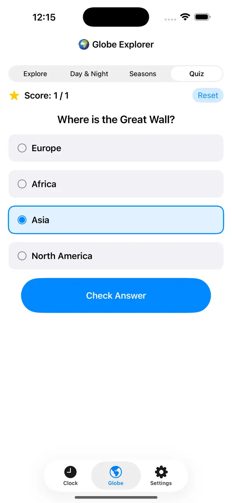
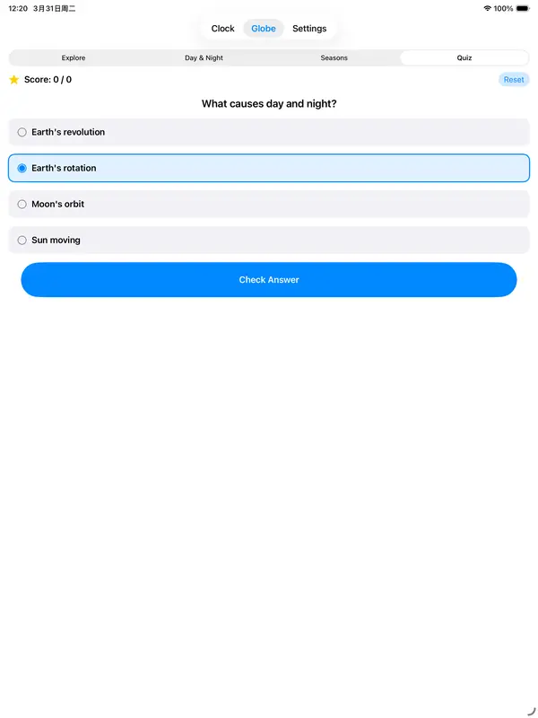

시계 읽는 법을 배우고, 세계를 탐험하세요. 모든 것을 하나의 인터랙티브 경험으로.
Tick Tock Earth는 두 가지 학습 모듈을 하나로 모았습니다. 완전한 인터랙티브 아날로그/디지털 시계와 NASA 영상으로 구현한 아름다운 3D 지구본 — 낮과 밤 시뮬레이션, 계절 공전, 퀴즈까지 수록했습니다.
앱 미리보기
iPhone



iPad



두 모듈, 하나의 앱
각 모듈은 독립적으로 동작하며 인터랙티브 도구, 시각 보조 자료, 퀴즈 모드를 가득 담았습니다.
🕐 인터랙티브 아날로그 시계
시침과 분침을 드래그해 원하는 시간을 맞추세요. 동기화된 디지털 표시가 즉시 업데이트됩니다. AM/PM과 시침·분침이 숫자판의 숫자와 어떻게 연결되는지 이해할 수 있습니다.
⏱ 경과 시간 계산기
시작 시간과 끝 시간을 정하면 경과 시간이 바로 표시됩니다. 시간 간격과 차이를 이해하는 데 유용한 도구입니다.
🌍 NASA 텍스처 기반 3D 지구본
생생하고 고해상도인 3D 지구를 돌려 보세요. 대륙이나 바다를 탭하면 그곳으로 날아가 간단한 정보를 읽을 수 있습니다. 위도/경도 격자와 라벨 표시도 전환할 수 있습니다.
🌗 낮과 밤 시뮬레이션
지구 자전축 기울기 23.5°에 고정된 교육용 지구본으로, 축의 극이 보입니다. 햇빛을 켜면 자전이 낮과 밤을 만드는 원리를 관찰할 수 있습니다 — 교실 모형 그대로입니다.
🌞 계절과 공전 다이어그램
애니메이션 공전 뷰로 매달 지구의 위치를 보여 줍니다. 북반구와 남반구의 계절을 나란히 표시합니다.
📝 내장 퀴즈
시계 퀴즈: 시계를 읽거나 맞추기. 지리 퀴즈: 대륙, 바다, 자전, 공전, 명소, 재미있는 상식. 점수 기록 포함.
사용 방법
홈 화면에서 두 모듈에 접근 — 탭하고 탐험하세요.
시계 탐험
배우기 탭: 시침을 드래그해 조작합니다. 단계별 가이드로 시, 분, AM/PM을 배웁니다.
경과 시간 탭: 두 시각 사이의 시간을 계산합니다.
퀴즈 탭: “시계 읽기” 또는 “시계 맞추기” — 답을 고르고 정답 확인을 탭하세요.
지구본 탐험
탐색 탭: 3D 지구본을 자유롭게 돌리세요. 대륙/바다 카드를 탭하면 그곳으로 날아가 정보를 읽을 수 있습니다.
낮과 밤 탭: 자전 속도를 조절하고 햇빛을 켜고 끄세요. 핀치로 확대/축소, 두 번 탭으로 초기화.
계절 탭: 월을 선택하면 지구의 공전 위치와 각 반구의 계절을 볼 수 있습니다.
오프라인 & 프라이버시
모든 기능이 기기 안에서 동작합니다. 계정 없음, 광고 없음, 데이터 수집 없음. 인터넷 연결 없이도 작동 — 교실, 여행, 어디서나 완벽합니다.
자주 묻는 질문
인터넷 연결이 필요한가요?
아니요. 시계, 지구본, 퀴즈 등 모든 기능이 완전히 오프라인에서 작동합니다.
데이터를 수집하나요?
아니요. 데이터 수집은 전혀 없습니다. 개인정보 처리방침를 확인하세요.
iPad에서 작동하나요?
네. Tick Tock Earth는 iPhone과 iPad 모두에 최적화된 범용 앱입니다.
퀴즈 점수를 초기화하려면?
퀴즈 탭 상단의 점수 표시 옆에 있는 “초기화” 버튼을 탭하세요.
지원팀에 연락하려면?
wangning.engineer@outlook.com로 이메일을 보내 주세요. 보통 24~48시간 내에 답변드립니다.
앱 받기
Tick Tock Earth는 iPhone·iPad용으로 App Store에 있습니다.